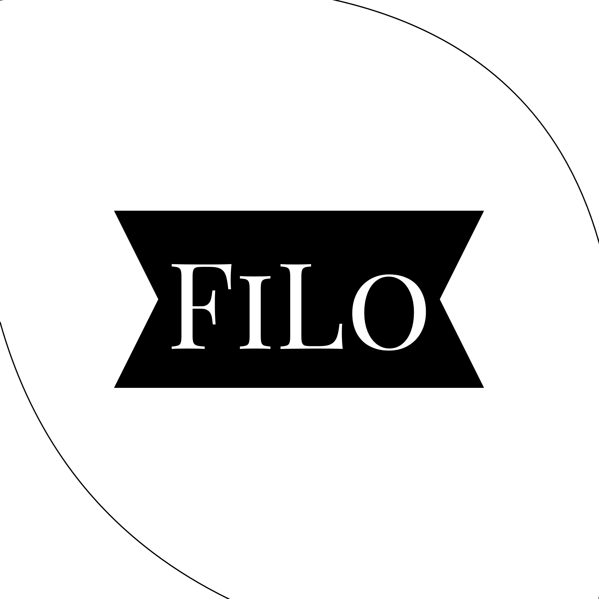

FILOFILO helps creators, freelancers and digital earners track income, expenses and real profit in one clean system.
FILO is a financial clarity platform built for the modern digital economy where individuals no longer depend on a single source of income. Today, creators, freelancers, marketers, and small business owners operate across multiple platforms simultaneously, generating income from different channels such as brand collaborations, freelance projects, digital products, and online services. While this creates opportunities for growth, it also introduces complexity in understanding true financial health. FILO was created to solve this exact problem by bringing all financial activity into one unified, simple, and intelligent system.
Our mission is to eliminate the confusion caused by fragmented financial tracking tools and replace them with a clean, intuitive experience that anyone can use without technical or accounting knowledge. Traditional tools like spreadsheets or complex accounting software often overwhelm users with unnecessary details. FILO takes a different approach by focusing only on what truly matters: income, expenses, pending payments, and actual profit. This allows users to immediately understand their financial position without manual calculations or guesswork.
Beyond tracking numbers, FILO aims to improve financial awareness. It helps users clearly see where their money comes from, where it goes, and how efficiently it is being managed. This level of clarity enables better decision-making, improved budgeting habits, and stronger long-term financial control. FILO is designed to grow with its users, adapting to different income models and evolving financial needs.
At its core, FILO is not just a financial tool but a clarity system for the modern economy. It empowers individuals to focus more on building their work, content, and businesses while ensuring their financial understanding remains simple, structured, and always accessible.
Naren Hullatti is the founder of FILO and the primary force behind its vision of simplifying financial clarity for modern digital earners. From an early stage, he recognized a major gap in how individuals manage money across multiple income streams, especially in today’s creator-driven and freelance-heavy economy. Most existing tools are either too complex or too fragmented, forcing users to rely on spreadsheets, manual tracking, or disconnected apps. Naren envisioned a system that removes this friction entirely and replaces it with simplicity, speed, and clarity.
As a founder, his focus lies in product vision, user experience design, and long-term scalability. He strongly believes that financial tools should not feel like enterprise software but should instead feel intuitive enough for anyone to use instantly. His approach emphasizes clarity over complexity, ensuring that every feature in FILO directly contributes to helping users understand their financial position better.
Naren is actively involved in shaping product direction through user feedback, surveys, and real-world validation. He prioritizes solving real problems over building unnecessary features, ensuring FILO remains focused and impactful. His long-term goal is to make FILO a global standard for financial clarity in the digital economy, empowering millions of creators and independent earners worldwide.
Neesa Divekar is the co-founder of FILO and plays a crucial role in shaping the product’s design, usability, and communication strategy. She focuses on ensuring that FILO remains extremely simple and intuitive, even while handling complex financial data behind the scenes. Her perspective bridges the gap between technical functionality and human usability, making sure the product feels natural and easy to understand for every user segment.
She is deeply involved in user experience design, interface clarity, and product storytelling. Neesa ensures that every interaction within FILO is smooth, minimal, and free from unnecessary complexity. Her design thinking approach helps translate abstract financial processes into simple visual experiences that users can quickly understand and act upon.
In addition to product design, she also contributes to user research and validation. By engaging with creators, freelancers, and small business owners, she helps gather insights that directly shape the product roadmap. Her vision is to ensure FILO remains user-first at every stage of growth and continues to solve real-world financial clarity problems in the simplest possible way.
Rishith M Naik is an integral contributor to FILO, focusing on system design, structural logic, and the underlying organization of financial data within the platform. His role is centered around ensuring that complex financial inputs are processed and presented in a way that remains clear, consistent, and scalable. He helps design the internal framework that allows FILO to handle multiple income streams, expenses, and financial interactions seamlessly.
His strength lies in analytical thinking and system structuring, which helps in defining how data flows across the platform. This ensures that users always receive accurate, meaningful insights without being exposed to unnecessary complexity. He contributes to building a strong foundation that supports long-term scalability and feature expansion.
Rishith’s work ensures that FILO is not just visually simple but also structurally robust. By focusing on backend logic and system organization, he helps maintain performance, reliability, and clarity as the platform grows. His contribution is essential in transforming FILO into a scalable financial clarity system capable of supporting a global user base.